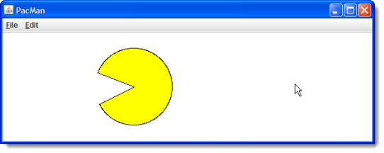

This week you'll spend some
more time working with loops. In addition, you'll have
an opportunity to work on some programs that use animation,
process events and create some JLabel widgets.
Here's the list of things you should do this week.
-
Advanced Loops—AdvancedLoopProblems:
Get some extra practice with loop functions by completing
these problems in AdvancedLoopProblems.java. To get
started, walk through the first exercise in
Section 8.2—Java Jumps. That will get you through the first exercise.
Once you're finished, you can continue with these problems:
- withoutString
- gHappy
- mirrorEnds
- sameEnds
- maxBlock
Complete these problems using any loops you like. You may need multiple loops. You may also make use of the the different jump statements, like
breakandcontinue.You can check your answers with the Check program, and look at the solutions if you get stuck.
-
Using Iterators and Files—RainStats:
This week you learned how to read files, using the
Scannerclass, and how to write files, using thePrintWriterclass. Complete the program named RainStats.java. As it now stands, the program writes the output file named rainfall-stats.txt and places it in your Chapter08 folder when you run it.OOPS!. Forgot to include the RainStats.java file in your Chapter08 folder this week. You can download it from here. Please place the file in your Chapter08 folder.
Your job is to complete the program by adding code inside the
summarizeStatsFile()method. Inside the method you need to open the input file, read each line, and produce a new output file summarizing the rainfall for each month.
 Notice that the input file has:
Notice that the input file has:
- A title line, in this case, the statistics for the year 823
- 12 lines of samples, one for each month. The first entry on each line is how many days of measurable rain occured in that month.
- The number of samples is followed by one
doublevalue for each sample. In the picture shown here, it rained 21 days in January, so the line has 21 doubles following the word 21. In February, it rained every day, so there are 28 entries. March was especially dry with only 7 entries, and so on.
Your job is to open and read the input file that the program produces and produce another output file. As shown here, your output file should have a title line with the word STATISTICS replace by SUMMARY. Then, for every month, you should have the sum of all the sample values supplied on that line.
There is no Check program for this exercise, but you may look at the solution page if you get stuck
-
Animation & Events—PacMan:
The title character in the PacMan series of arcade games is pretty easy
to draw using a yellow-filled
GArc. Using the starter code from Chapter08 (which just creates the window the correct size), add a PacMan character at the far left side of the screen. Use the standard animation skeleton to move him to the right side, where he'll reverse course and start chomping his way back to the left.

In addition to the animation, you'll need to add some mouse event handling. When you click on the program, the PacMan character should change direction (just as if he had hit the right or left sides of the application).Here are some tips to help you implement the application:
- You'll need some instance variables to represent the state of the
object during the animation. For instance, the variable
dxcan be used to represent how far the PacMan moves during each frame. To start moving in the opposite direction, (when you hit either end), just reverse the sign ofdx. - To animate the mouth, you'll want varibles for
startAngle,endAngleand the amount to open or close the mouth on each frame (I call thismxbecause it works kind of likedx). You'll also need a constant for MOUTH set to90.0. This is the widest that the mouth can get before you need to change directions.The start angle should begin at
MOUTH / 2and the sweep angle should be360 - MOUTH. At each frame, subtractmx / 2from the start angle, and add it to the sweep angle. When the sweep angle goes to zero, or it passesMOUTH, then change the sign of the "change" variable,mx. - To change the direction of the PacMan, just add
180tosweepAngleand change the sign ofdx.
There is no Check program for this, but you can compare your work to the completed applet which you can run by clicking the link in this sentence.
- You'll need some instance variables to represent the state of the
object during the animation. For instance, the variable